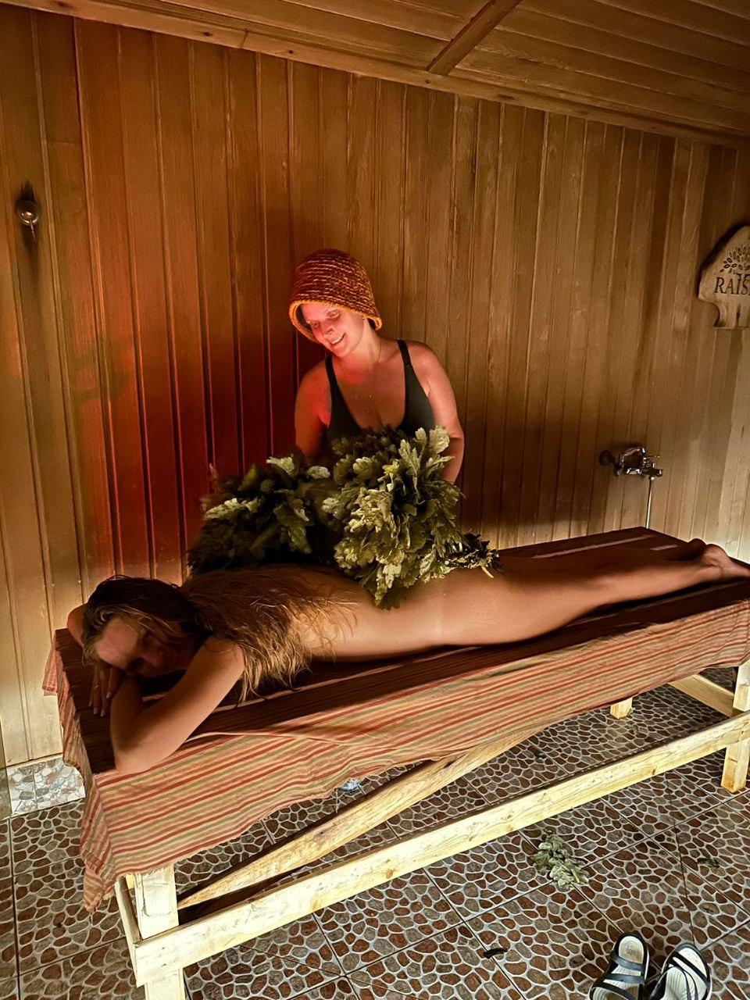
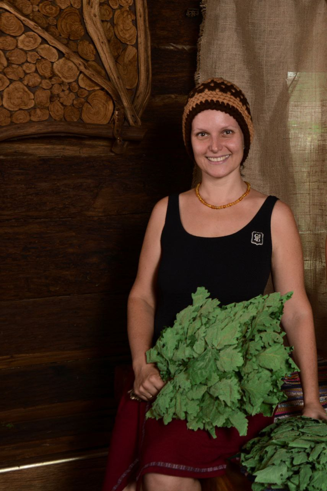
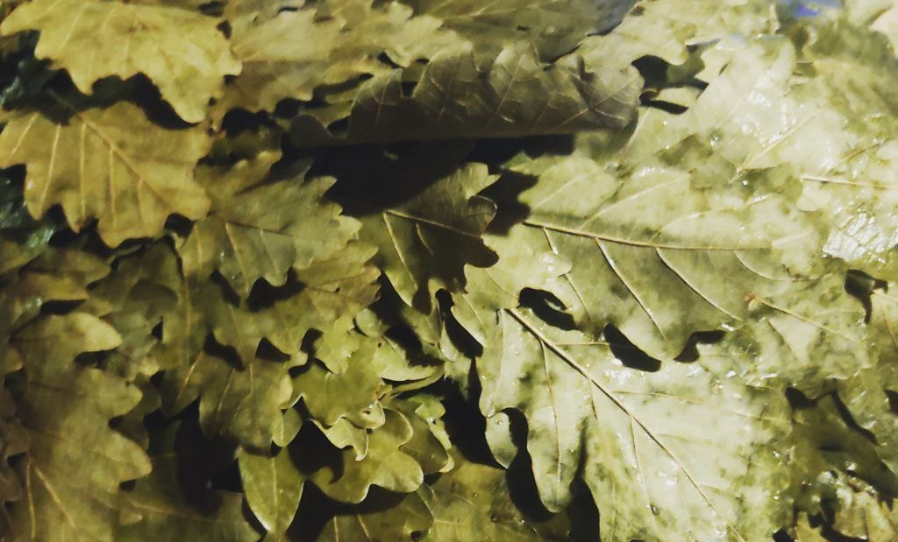
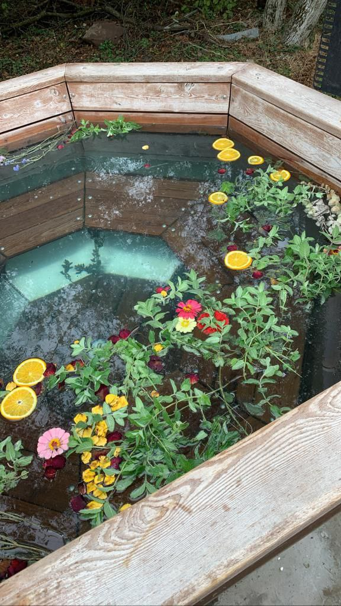
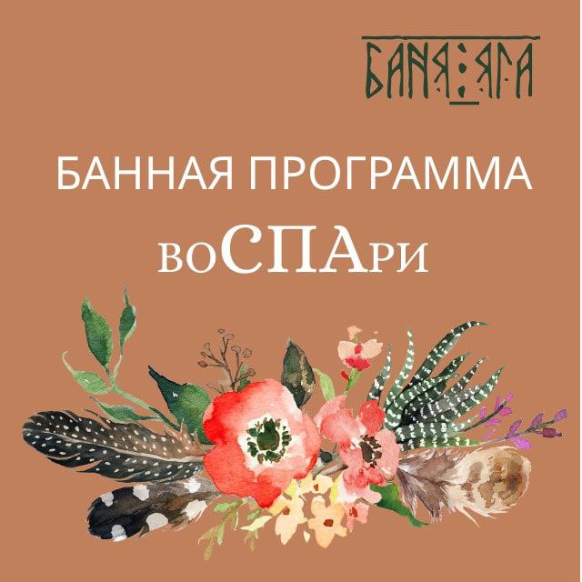
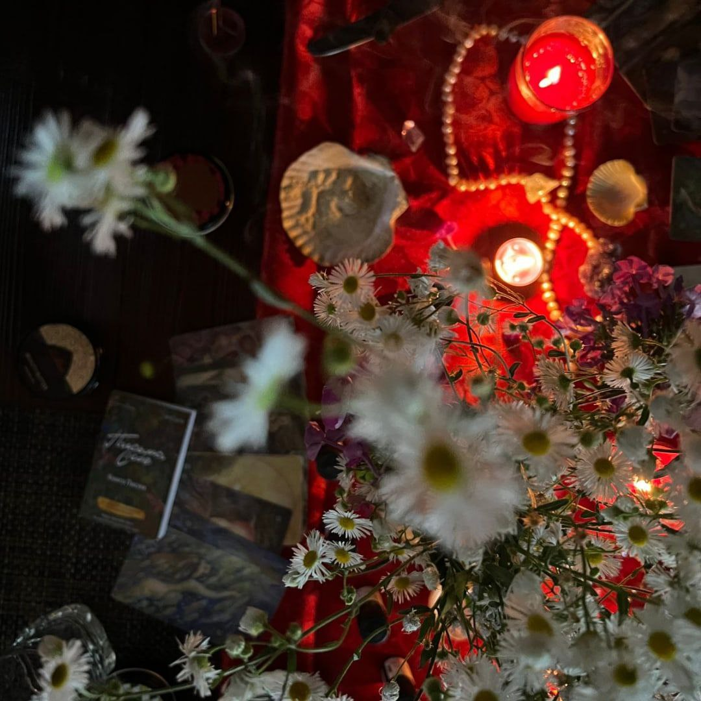

ПЕРВЫЙ КУРС ПО БАННОМУ МАСТЕРСТВУ ОТ
Юлии Щербаковой
Курс получился объёмным, глубоким, очень фундаментальным и ОПОРНЫМ. Когда
уже не остается никаких вопросов, ты можешь просто взять веники и сказать
другу: "Пойдем в баню, попарю тебя!"


Создатель курса
"Юлия Щербакова сегодня — это Живая Женщина, которая создает
великолепные банные мистерии для Женщин. Банная Богиня, Волшебница,
Мастерица и Мама. Именно так вы меня называете."
КУРС ДАСТ ВАМ ЗНАНИЯ
Для развития себя как личности и выхода на новые уровни
Вы можете научиться парить для себя, своей семьи и друзей. Эти
навыки и знания станут для вас не только подспорьем на всю жизнь, но
и возможностью создавать для близких особые банные мистерии.
Для быстрого старта, если вы только начинаете
С помощью курса вы сможете перенять опыт мастера, который
нарабатывался с 2009 года, и ускорить свой прогресс на несколько лет
всего за 2 месяца.
Для повышения качества ваших услуг, если вы уже работаете в бане
На курсе вас ждёт полный объём информации о бане. От истории, сказок
и легенд о бане до нюансов управления печью. От тонкостей настройки
мастера до температуры воды в купели.

Что вас ждёт на курсе
26 уроков
Видео/аудио материалы внутри каждого урока
Конспекты
Текстовые конспекты видео и аудио материалов для лучшего понимания
урока
4 темы
Тема 1. О бане во всех смыслах
Тема 2. Мастер
Тема 3. Гость
Тема 4. Парение
Доступ
365 дней к каждой теме
ПРОГРАММА КУРСА
ДОСТУП СРАЗУ КО ВСЕМ УРОКАМ
Тема 1. О бане во всех смыслах
• Баня как место силы
• Сказки и легенды о бане
• История бани на Руси и в мире
• Виды бань в разных странах
• Место бани в современном мире
• Зачем нам баня? Психологический и физиологический аспект.
• Баня как строение
• Виды бань
• Наполнение бани
• Эргономика банного пространства
• Парная в бане, микроклимат, инвентарь
• Печка в парной (классификация, виды, специфика, управление)
• Веники и травы (виды, какие и как используют, как готовить, как
собирать и хранить)
• Банный инвентарь
• SPA ритуал очищения солью
Тема 2. Мастер
• Кто такой мастер?
• Личный рост
• Проводник
• ЭГО
• Принципы работы и этика
• Этика общения
• Подготовка к работе
• Самосохранение
• Организация рабочего пространства
Тема 3. Гость
• Кто он — ваш гость? Определение вашей целевой аудитории и ценового
сегмента + продвижение личного бренда
• Ваше отношение к гостю В парной и ВНЕ парной
• Этикет общения
• Безопасное пространство
• Поведение гостя
• Предподготовка гостя к бане (еда, питье, настрой до бани и во время)
Тема 4. Парение
• Смыслы/задачи/цели парения человека в бане
• Подготовка парной к работе, открытие пространства
• Положение гостя на полке (относительно печи/мастера/окна-двери)
• Подготовка гостя к парению уже на полке
• Начало парения
• Виды движений, приемов, пасов вениками во время парения
• Смысл движений (почему так и зачем мы это делаем?)
• Алгоритмы Матрешки. Почему такая последовательность действий в
алгоритме?
• Контрастные процедуры (виды, способы, вариации, температурные
показатели, реакции кожи)
• Догрев гостя
• Завершение парения
• Вывод гостя в комнату отдыха
• Закрытие пространства работы в бане
Теперь доступна оплата одной темы!
Доступ к материалам: 365 дней Включены все уроки, конспекты и
дополнительные материалы каждой темы.
"Этот курс для тех, кто хочет связать свою жизнь с баней, тем кто хочет
глубины и деталей, тем кому нужна моя мудрость и опыт. Я готова делиться,
я готова учить."



Если у вас возникли сложности с оплатой, пожалуста, напишите нам: